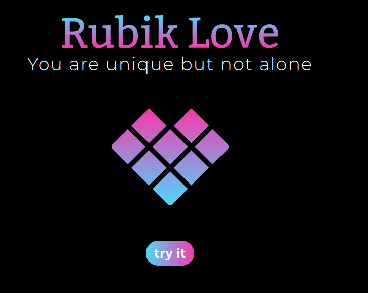
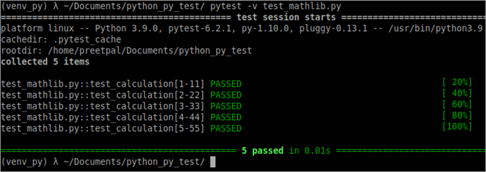

About
Rubik-Love is a totally new platform to find co-thinkers
driven by a private unique algorithm.
The algorithm is the heart of the platform.
He's analyzing user behavior and producing exact math value.
The math value exactly describing on how
the mindset of one user are matching with another.
The set of math values allows building the grid around the user
of what things and people he is interested in.
The set of grids allows binding a global comprehensive grid
from every user to every user, just like atoms bound in the universe ...
Now we are ready to provide an entirely new quality
of matching and people connection in the world of social networks and dating.
QA
- Who is yor target audience?
- Our target audience combined (consist?*) of:
1. People who want to get result with no limited quantity-quality point.
... ?*
- What is characteristics of your target audience?
1. People of any age
...?
- What your target audience similar to?
We are interested to people who are now using:
1. "Tinder" dating service for dating
2. "LinkedIn" social network for business goals
3. "Facebook" universal social network for chat
4. Users of Tik-Tok for a new trends
- Why not to integrate our algorithm into these platforms?
This is possible, and we want to provide a such service in the future,
but for now it has a few problems:
1. It may lead to big legality issues from any of these platforms,
we are not so giant and probably will get a bad contracts.
2. It's technically harder and requires more resources in both aspects, launching and maintenance.
Start our platform is easiest for now.
3. We're splitting our audience in many difference pieces, it's already not a single place.
(It's converting us from B2C to B2B.?*)
4. We are not so giant or familiar for now. It will take a tons of resources
to proof that we are need to be integrated. It's more productive to get a some value first.
- Why we are ultimately better
than all other dating services?
Other dating services able to provide result with only strictly limited quantity-quality point.
We can produce result with any quantity-quality point.
- What risks (proc and cons?*) investor has with us?
- We need 6 employers during 6 months to finally proof our concept and get first 10 000 users.
Definitely 6 month is a risks, but let's imagine the worst case.
Even if we will fail in every of algorithm application, after 6 month we are still getting the:
1. We will have a product that can be sold, integrated or scale.
2. The 6 month of advantage (фора / отрыв) for future trend of people sorting.
3. Ready-to-use developers team that can deal with any technical product.
4. Ready-to-use programming code base for similar products.
5. Experience in a new not researched set of approaches of solution in the popular problem.
- Why need one more dating service?
-Current sites of dating are not working. This is proven by their quantity and sameness.
If at least 1 of them worked, he would fill the entire niche.
This is reminiscent of the abundance of forums before the coming of social networks.
- Are we "Tinder" or same to it?
- No. We are in a sense anti-tinder.
Tinder puts outer looks first.
We put the inner world first.
We are the same in our goal to connect the people.
We are totally different in our way to do it.
- Are we "LinkedIn" or same to it?
- No, "LinkedIn" misses all valuable meta-information of the user,
he knows nothing about a user mindset.
It can tell you is someone experienced enough,
but it never will not answer is you looking the same.
- Are you exactly social network or dating service?
- Exactly, 50/50!
We are the service that can connect people by their mindset.
What we can with it is secondary question.
We will do analyze of user behavior to answer on this question more precisely.
- Why don't dating services work?
- They are based on a total contradiction. The dating site has to get the client for X money
and get from him 2X money. AT the moment when the client gets what he wants,
finds a friend, soul mate or a partner, he's leaving the platform.
The service will never to lose a client who pays, the client will never to get what he are findings for.
- Why you at times calling you social network or dating service?
- Like 20 years ago, there is no (yet) a special word / term to describe what we're doing.
Well, I'm using the word that more precise suitable for concrete special case
(depending on our characteristics?*).
- How to use the app:
1. Like the posts what you are liking.
2. Open the result tab with people that has similar mindset with you (or vice versa, the different).
3. Explore and choose the people that are looks cool for you.
4. Enjoy! You can speak with them about any posts that you both liked or not
- Why people wants one more dating service?
- Current dating services are not working.
This is proven by their quantity and sameness.
If at least 1 of them worked, he would fill the entire niche.
This is reminiscent of the abundance of forums before the coming of social networks.
- Why we are reminiscent to google?
We have the similar algorithm, google meet for sites, we meet for people.
The very base and very first google algorithm was doing the next:
Other search engines ("Yahoo", "AltaVista", etc) was giving result by count of target words on the site page.
Google starts to give result by count of target links. Goog sites has more links that leads to them.
Other "Search people engines" giving result by count of target words in the user biography.
Rubik starts to give result by count of target posts. Goog matching people has more matched posts that leads only to them.
- Why we are reminiscent to asymmetric cryptography encryption?
- The heart of asymmetric encryption is an idea that we can't do something to be 100% endless in universe,
but we doing it so long that it's 100% enough for our whole life.
We are used the same idea. Dating services paradox of X and 2X can't be solved endless for 100%,
but we're doing that for so long that enough for whole human life.
- How did you solve the contradiction of "X and 2X" of dating services?
- Three points:
1. We combined dating service and social network.
Now if user will get what he wants, let's say the soul-mate - he is still interested in two other
goals: find a new friends, find a new partners. Because of these 3 things consist our life.
Soul-mate, friends, partners. At least two of them we always want to find new.
2. If user will leave the platform - he will miss a quality of his personal grid.
Because the quality of grid increase every day. Missed days can't be restored.
Moreover, every day has his own exclusive value for every user.
The wish to get rarely personal exclusive value will attract user
at least open the platform once a day.
3. We can control how fast user will find a new friends, partners, soul-mate.
Because getting too many friends, partners or soul-mates
will decrease the valuable of these important things in the life.
We are appreciate and loving these things and will try to balance between quality and quantity.
This flow becomes endless just like a life of man.
friends and build the personal grid around itself. Every person always interesting in
We know how to remain regular customers even after X's point of view when he finds
partner. We stretched the process, smoothed out sharp corners, and made it endless.
- Is the best auditory already collected by "Tinder" (the cheapest and payment-able) ?
- Quality over Quantity.
Tinder collects people under the moto "quickly".
We gather people under the moto "Quality".
Which of these audiences brings more profit is an open question.
But still exists a little note:
we can downgrade to moto "quickly".
"Tinder" can't upgrade to moto "quality".
- Your goals and application so indefinitely?
You've mentioned business network, social network, dating service, it's not too many goals?
- Flexibility rather than (over ?*) indefinite.
We can to win in every of these spheres because our algorithm giving us key advantages
in every of these areas.
Don't use experience when you can use the math.
It's different spheres only in terms (thought ?*) of humans.
In words of algorithm and math it's still the same task (?*), - to sort the users.
- You are so flexible, which sphere you will deal first,
business network, social network, dating service, something else?
- According to our initial customer development the best auditory for us is dating sphere.
- We will make research for the next stages on the next rounds.
- Why you're finding the investor when you have not 100% finished your technical side?
- Perfectionism is good in theory and bad in practical, we are the practical one.
We are already useful to users, people waiting us.
- How the algorithm works?
- We send posts that come to all users. Users rate these posts by “like” or “dislike”.
We track these ratings and find people who have given the same rating to the same post.
At first time the accuracy is low, but already after a week every user will have 2^28 combinations.
It's making every user a really unique.
With every new rate, a group matches narrows down literally to a one person,
and the accuracy proportionally grows to almost 100%, It's like a Google algorithm but for people.
Simple enough to be lightweight and scalable, efficient enough to be first in market
- Почему тогда у них есть клиенты?
Мы видим только вершину айсберга, это 20%, которые подстроились под сервисы знакомств. Основная
аудитория игнорирует
сервисы знакомств в текущей реализации. Мы проводили опрос и он показал, что 50% считают регистрацию и
использование
сайта знакомств постыдным занятием, ещ 30% прекратило их использование по ряду причин (скудный
функционал, отсутствие
результат, фиктивные пользователи и т.п.), оставшиеся 20% пользуются ими за неимением лучшего.
- Are you using artificial intelligence (AI),
neural network (NN), machine learning (ML), etc?
No, our algorithm is better for our goal.
More precise results, lower costs, easy to scale.
Every of these technologies has good and bad applications. One of the good application
is to invent a new approach by noticing the unique features. We already did it already invented
a new approach and know how to sort and match people.
The final stage in every AI/NN/ML development is transformation
of expensive technology into a small scalable algorithm, like us one.
- Are you planning to use artificial intelligence (AI) in future?,
- Yes. We are never missing the good practices.
We will combine and experiment on our algorithm with AI/NN/ML on the future stages.
Despite we invented the algorithm - we are still entering into the totally new unexplored area.
Our algorithm is not only a final solution for match making,
but also a door into a new world of another-level possibilities.
Our key advantages
Profile autofill.
- Filling the profile is the painfullest problem of such service,
both for the users and for the platforms.
Platforms need minimal set of information about users to provide quality service.
Users not ready to spend much time for profile filling.
Platforms loosing money, users missing the quality service.
We are autofill the user profile by results of algorithm job.
Touchpoint.In other social networks people can't start the communication comfortable
because they are not know the touchpoint of each other. Social network with uncomfortable
communication missing a lot of benefits.
- Our algorithm calculates the touchpoint for user and showing the result.
Now two totally unknown users can comfortably start the communication
without fearing to be ignored .
Safe and effective chat.
- Safe chat is important metric for every social network.
Some success services even positioning safe chat as their key advantage.
In our service it's only one of key advantages.
Effective chat allows to avoid nonsense and not interests chats with low match mindset.
We are solving the both problems by our algorithm.
In our service the user can choose a boundary of mindset matching to start the communication.
We are getting the mindset matching by algorithm job results.
Solution
How does the algorithm solve the problem?
The algorithm gives us a key advantage for each item:
Accuracy of matching increases every day.
Each new like to a post increases the accuracy,
the posts is published daily, the accuracy increases every day, this is endless process.
You hobbies are exact.
In a regular service, if you just list your hobbies - there will be many "misses".
User 1 wrote "rollers", and user 2 "roller skates", and that's it, no match will happen.
User 1 wrote "ping-pong" and user 2 wrote "table tennis" - it's the same, but match will be missed.
With musical groups, such situations are especially.
Moreover, many films, games, gods, have different name in each country for marketing purposes.
No boring questionnaires.
Imagine you met a "Jean", he will provide friends, partners, soul-mates for you but you should type
all your hobbies.
How long it will take, the place, the time, how exact, descriptive it will be, did you don't missed
something?
Did it? Now, are you sure your soul-mate also did it? Unique, but not alone.
Result guaranteed.
How much time do you need to spend on a dating site to achieve a guaranteed result?
At least 50%, 10%, 5% of this time? Is result accessible at all?
The time you spent in the past does not affect the future result in any way.
In our case, this is not the case, the accuracy increases with each put "like".
All limited only by your desire.
Fast and guaranteed.
One minute - this is how. During this time you
you will have time to leisurely open the site or application and put "likes" on the news you like. All
other work
the algorithms will do it for you. The next time you open the app, you'll be able to use the pre-made
result, and view REAL matches created based on a well-defined algorithm.
Controlled outcome.
Do you want a soul-mate that will share your mind exactly the 20% or 80% percentage?
It's manageable!
Any number from 0 to 100, any count of matches, mismatches,
Every user has his own "perfect match" coefficient.
The system may control every number by providing the corresponding matches.
Help people to make a decision
Сколько часов в день нужно тратить, что бы достичь вышеупомянутого результата? Ответ - 45 секунд. За это
время вы
успеете неторопясь открыть сайт или приложение и поставить "лайки" понравившимся новостям. Все остальную
работу
алгоритмы сделают за вас. В следующий раз, когда вы откроете приложение, вы сможете пользоваться уже
готовым
результатом, и просматривать РЕАЛЬНЫЕ совпадения, созданные на основе четко определенного алгоритма.
How you will make the money?
Data provided itself by user
The result and accuracy of service highly tied with the data provided by user itself.
There is no sense to user to miss or lie about his preferences
because it will give him non-corresponding matches.
Most services collects the data. Our service getting the data
Total, the data is:
1. Provided directly by user. No need to collect it.
2. Exact, with no broken pieces. No need to analyze and guess it.
3. Actually, modern. The new data providings every day, it's not outdated.
4. The same source. We can make continuous analyze
5. The same data model from multiple sources. We can combine and analyze data from a multiple sameness
sources.
Our team
CTE
This man sets the course for our rocket. He knows what the user wants and will not rest until the goal is achieved.
David Tsivin

UI/UX Designer
UI/UX Designer. Young and enthusiastic.
Vladimir Dubrovin
Mobile developer
Join us. And get inspired by excellent design and clean backend side.
Stepan Turchenko
Backend developer
Yes, it's the same person with a CTE. He works directly with him, so between task setting and task accomplishing there is no gap.
David tsivin
Join us
На данный момент нашему проекту, для запуска на рынок не хватает:

Database architect
TODO make
Who owns the information, he owns the world (Nathan Mayer Rothschild)
.
Welcome mr. president.
Data analytic
Data is nothing without analyzing, you will meet a lot of it.
I don't know how you will come to it, but the result should be definitely
42.
Machine learning engineer
The service algorithm are perfect, there are always a way to become better.
Progress
Host a new landing-page.
Add more tests for the "User" MVP module.
Add new feature to bot, change matches view, fix bug with a "Help" key.